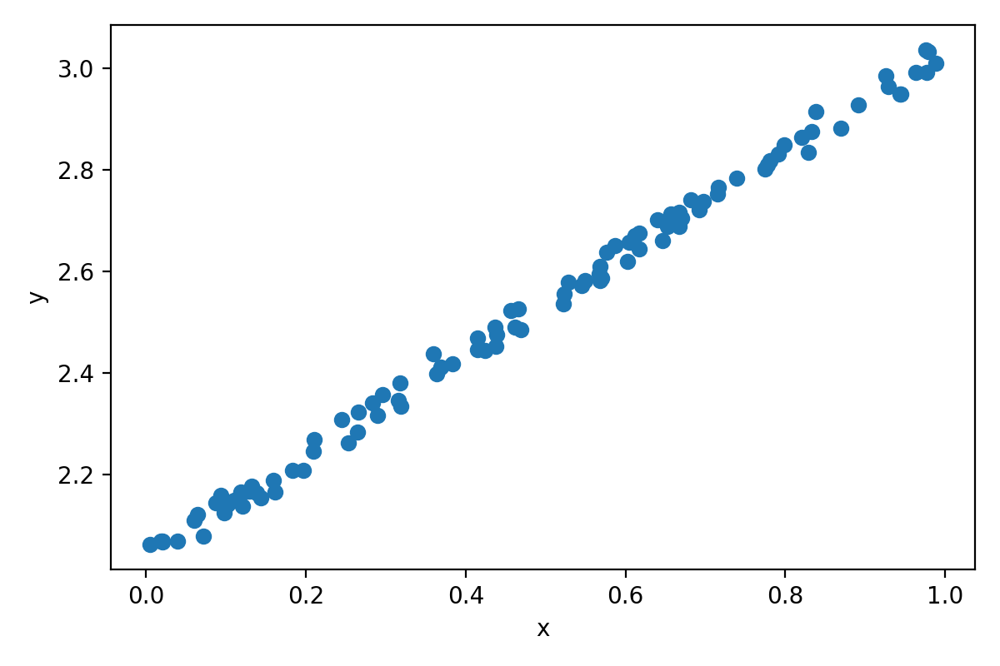
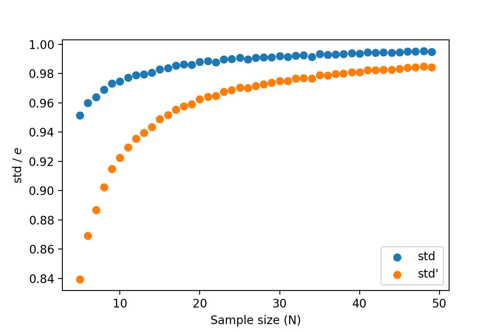
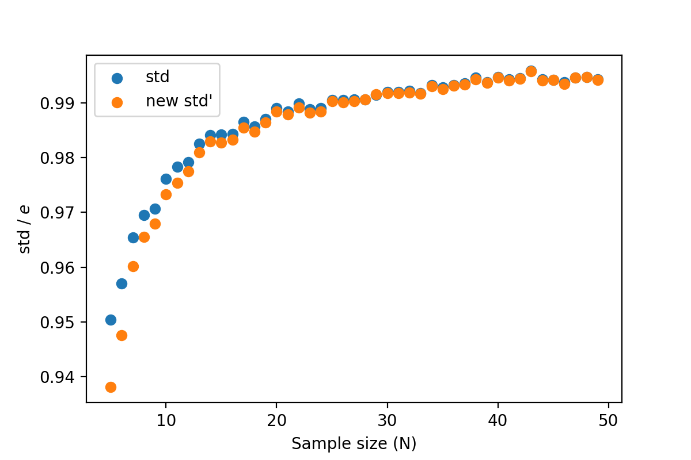
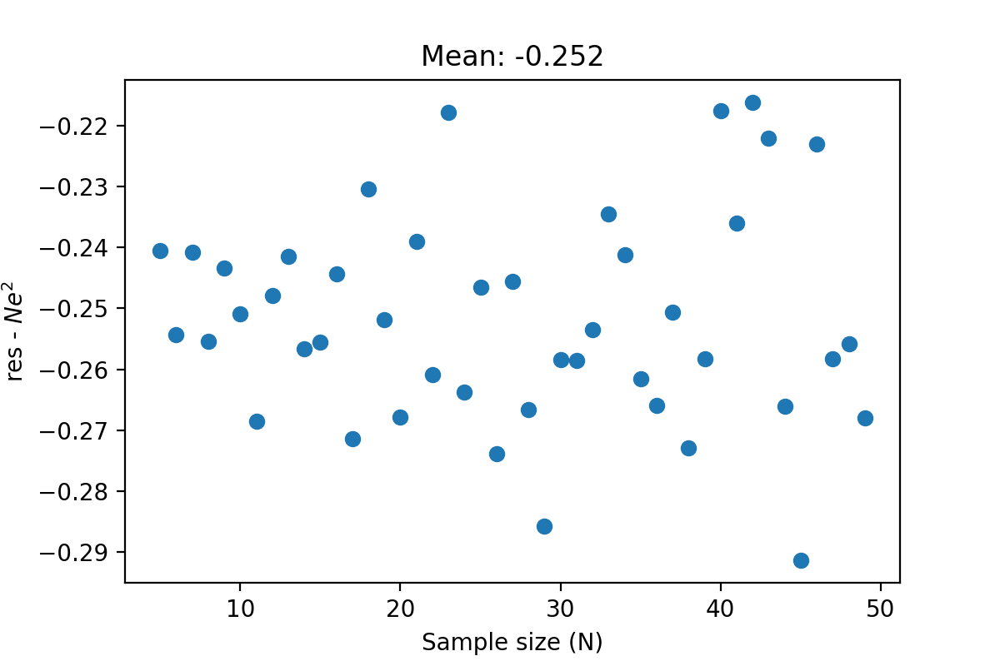
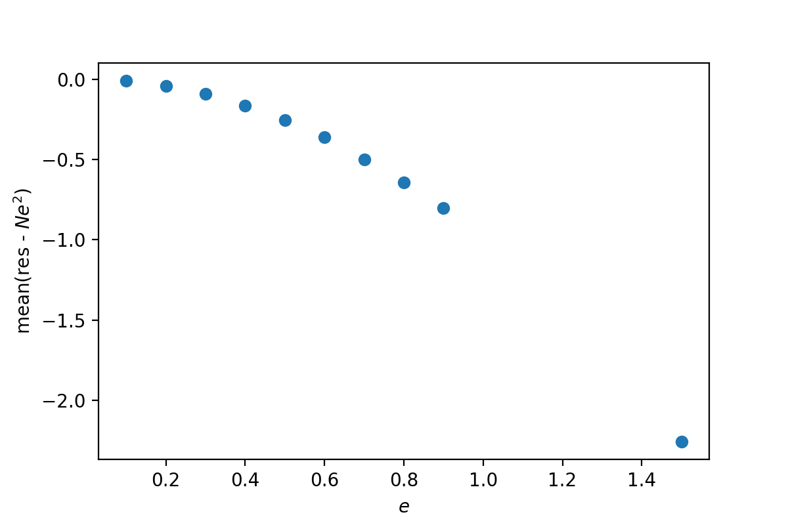
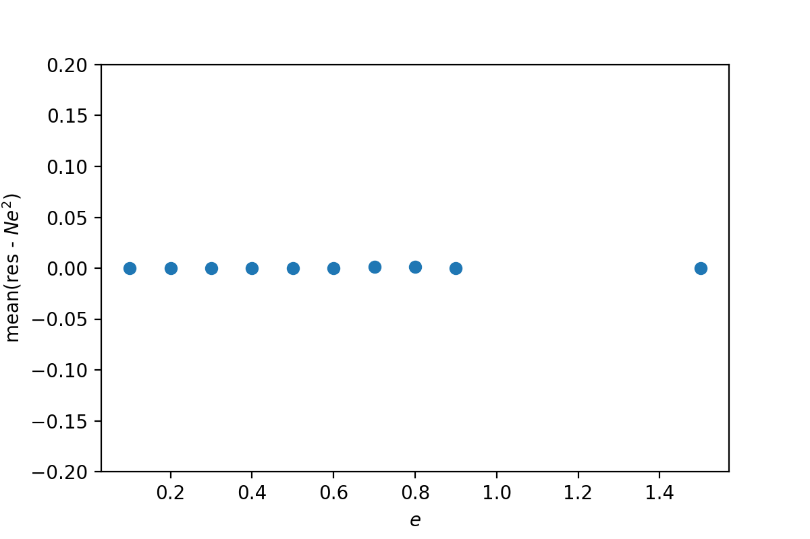
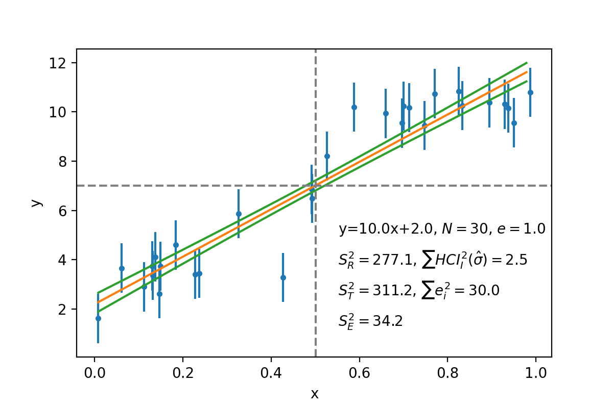

Residual in fitting¶
Question¶
我们想用\(y = a x + b\)拟合一个如下的线性关系：

这是个Mock data，所以答案已知：
\(a = 1, b = 2\)
另有统一的观测\(y\)方向的观测误差\(e = 0.05\)以及这个线性关系的内禀弥散\(\sigma_\mathrm{r} = 0.03\)，它们服从独立的高斯分布，有前述相应的\(\sigma\)
观测误差是已知的，这个关系的总弥散也可以测出来，如何通过这两个值去估计内禀弥散？
倒过来想¶
我们换一个思路。因为是Mock data，我们知道观测误差、内禀弥散、总弥散以及fit出来的一切数据；这些数据怎么组合可以得到0？
从高斯分布开始¶
再简化一下。我们有一组服从高斯分布的数\(\{y_1, y_2, ..., y_N\}\)，宽度（相当于观测误差，所以这里也用\(e\)表示）是我们指定的；那么总弥散和宽度有什么关系？
首先我们可以比较样本标准差(\(\mathrm{std}\))和给定的宽度(\(e\))：
任取一个\(N\)，计算很多个\(\mathrm{std}\)、取平均值并除以\(e\)，这个比值与\(N\)有如下关系（蓝点）：

它们并不相等；实际上这是正常的，因为当\(N\)很小的时候用\(\mathrm{std}\)去估计\(e\)是不正确的；我的理解是因为样本太少而且符合高斯分布，所以取到的样本会倾向于在0左右，所以算出来的标准差偏小。这个曲线就是无偏标准差的改正曲线（维基百科）。
这个时候我们假设已知这个样本的平均值为0；\(y^2\)也就是\((y-0)^2\)。如果我们不知道真实的均值，那么就需要用样本的均值去估计，也就是把\(0\)换成\(\bar{y}\)。这个时候如果我们直接抄式子\(1\)，那么画出来的比值就是上图的橙色点，是不对的。我们需要把\(N\)换成\(N-1\)，也就是
这个时候两组点就很接近了（虽然我不知道为什么还有一点区别）：

这就是贝塞尔改正。
如果是标准差呢？¶
我们现在比较标准差
和高斯分布的宽度 \(Ne^2\) 这两者的差异。为了接近实用目的这里比较两者的差值而不是商。
当\(e = 0.5\)时，\(\mathrm{res} - Ne^2\)的值随\(N\)的变化如下：

显然这不为0. 这个差值和\(e\)有关，是这样的：

而当我们使用了改正过的\(\mathrm{res}\)，\(\mathrm{res} = \sum (y-\bar{y})^2 \frac{N}{N-1}\)，的时候，这个差值就不见了：

这里能得出的结论是，当\(\bar{y}\)不是一个确定值而是一个通过某种方法估计的值的时候，我们需要做一些改正，而这个改正与有多少个变量参与到了\(\bar{y}\)的计算里有关；平均值的话是1.
回到之前的问题¶
现在的\(\bar{y}\)是\(y_\mathrm{cal} = ax + b\)，所以\(\mathrm{res}\)应为
用这个去和\(Ne^2\)比较，就一致了。
置信区间¶
尤其的是如果不做\(\frac{N}{N-2}\)而是用最初的\(\mathrm{res}\)加上每个点的\(1\sigma\)置信区间，这个量也和\(Ne^2\)是一致的。暂时不清楚原因。
\(e\)不同的话？¶
看这里。 现在应该用的公式是：
用原来的公式在误差scatter为10%时开始偏离。
陈黎老师的解释¶
前提：
线性关系\(y = ax + b + N(0, e)\)
每个数据点的测量误差都是\(e\)
没有额外的弥散\(\sigma_\mathrm{r}\)
\(\bar{y} = \sum{y_i} / N\)
\(\hat{y} = ax_i + b\)
根据回归分析有总变差平方和等于残差平方和加上回归平方和，\(S_T^2 = S_E^2 + S_R^2\)，以及
实际上\(\sum_{i=1}^N HCI_i^2(\hat{\sigma}) \approx S_R^2\)以及\(\sum_{i=1}^N e_i^2 = S_T^2\)。
